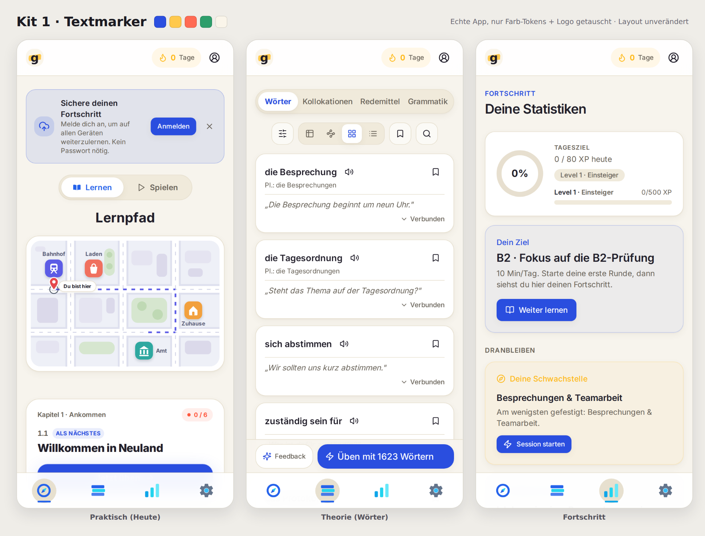
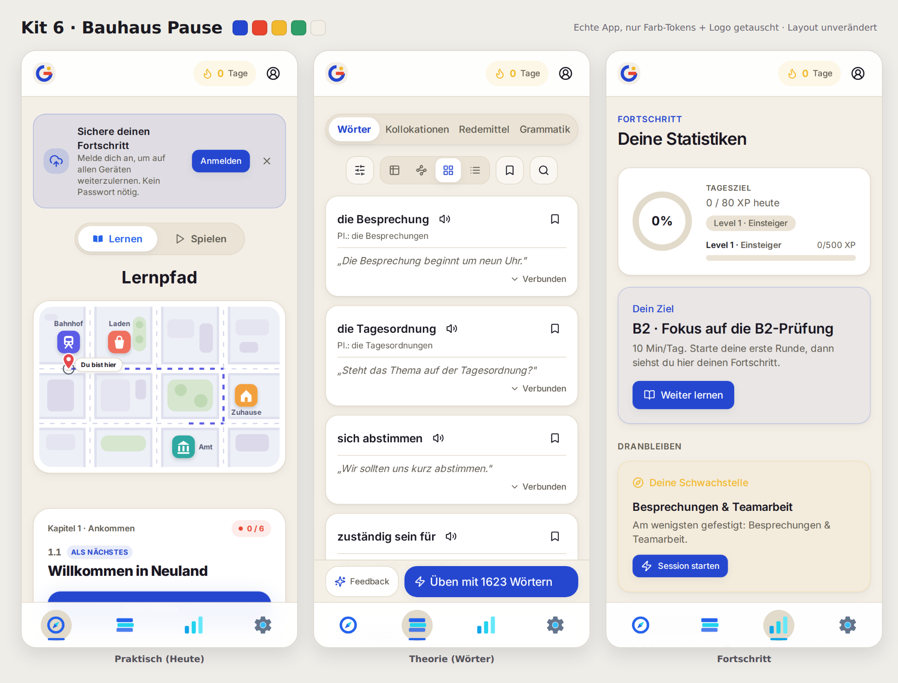
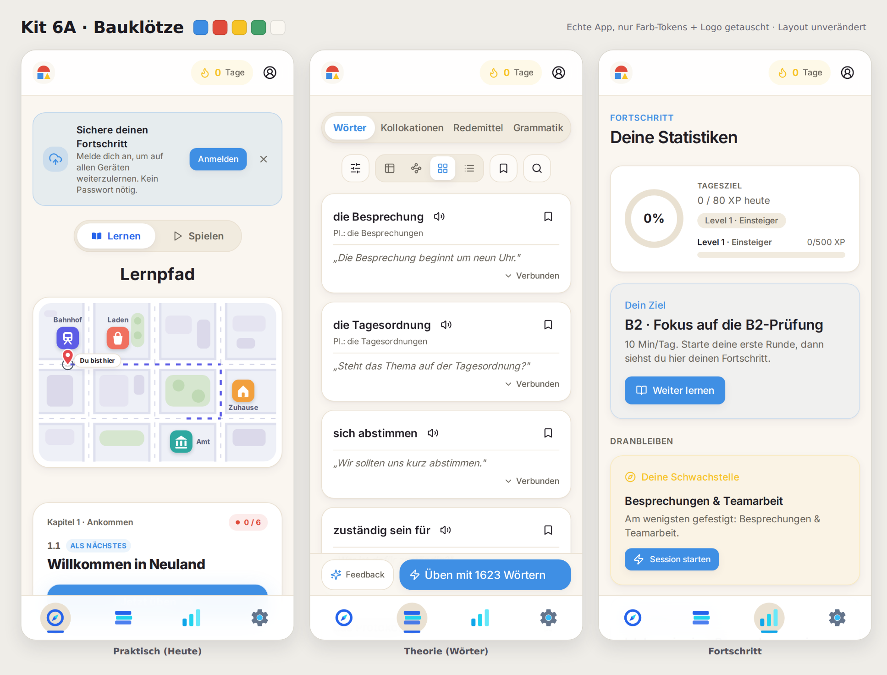
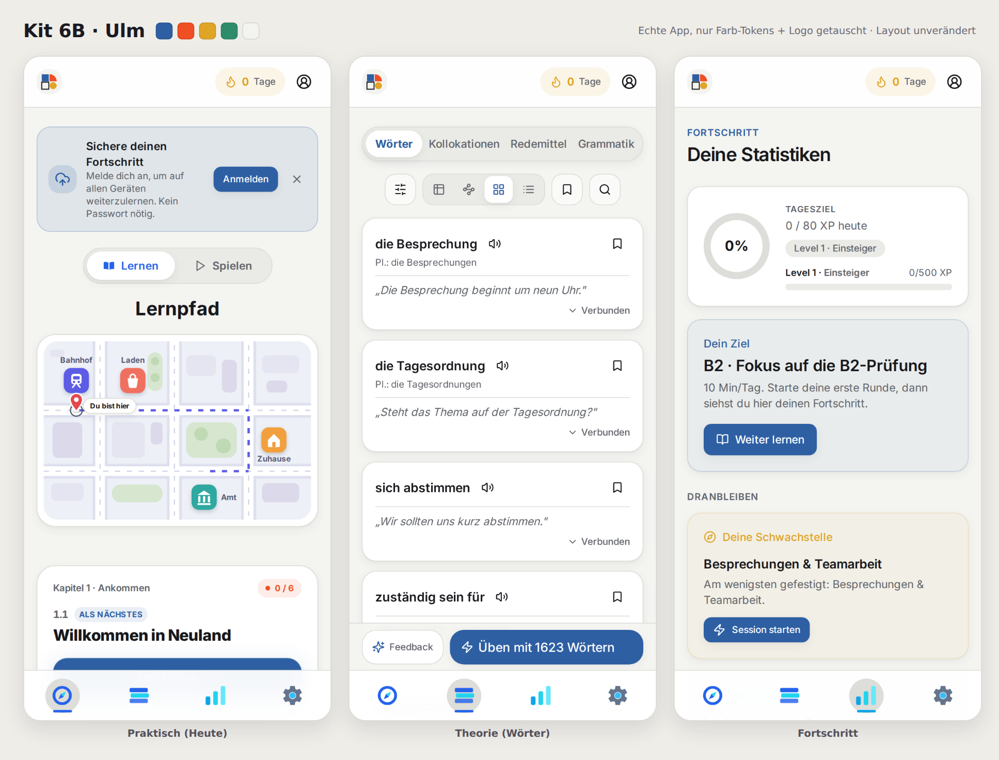
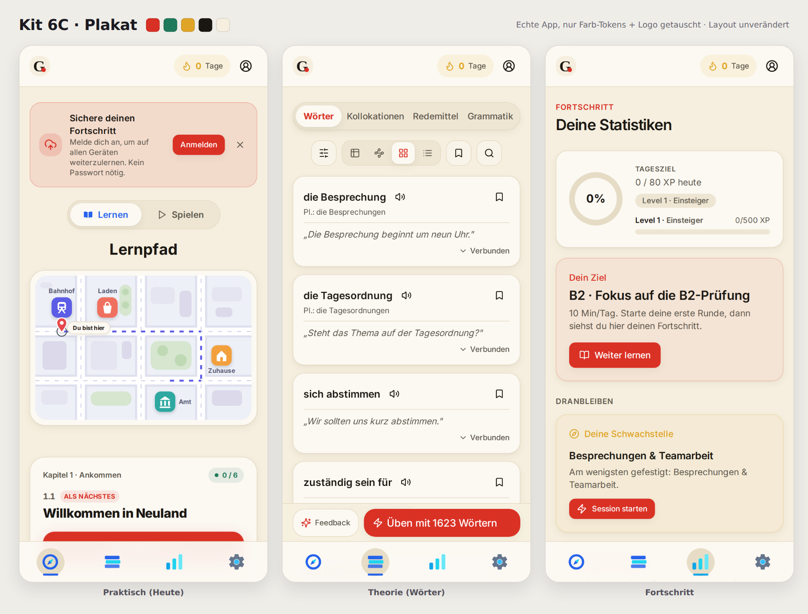
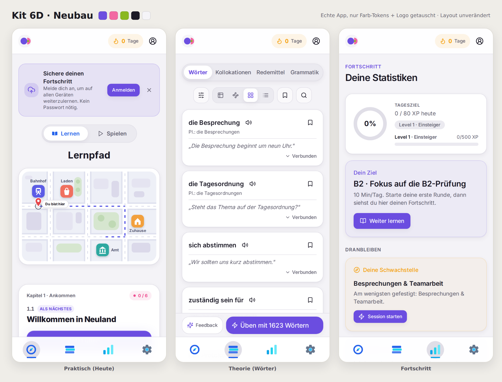
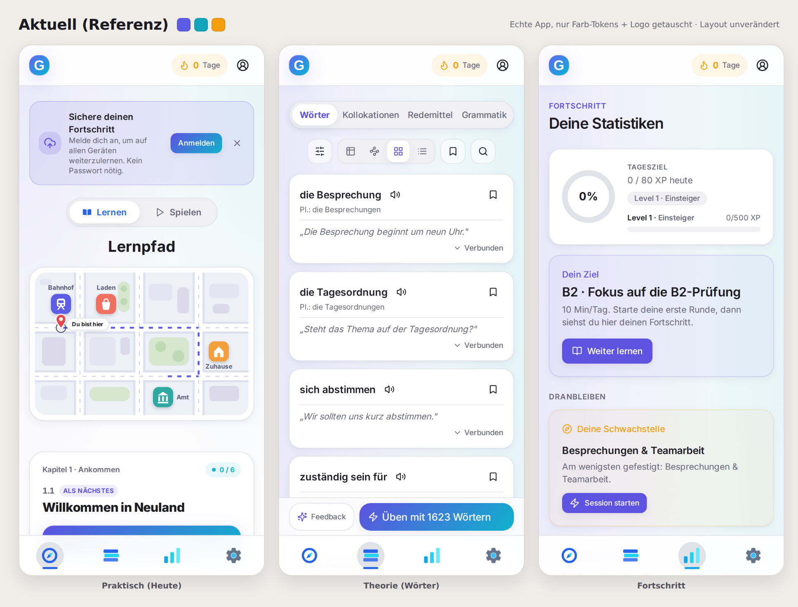

<!-- Genauly brand catalogue Vol. V (session 127 cont.) — Bauhaus family + real-app previews. Open in a browser. -->
<meta charset="utf-8">
<meta name="viewport" content="width=device-width, initial-scale=1">
<title>Genauly Markenkatalog · Vol. V · Bauhaus-Familie + App-Previews</title>
<link rel="preconnect" href="https://fonts.googleapis.com">
<link rel="preconnect" href="https://fonts.gstatic.com" crossorigin>
<link rel="stylesheet" href="https://fonts.googleapis.com/css2?family=Anton&family=Archivo+Black&family=Familjen+Grotesk:wght@500;600;700&family=Figtree:wght@400;600&family=Gabarito:wght@600;700;800&family=IBM+Plex+Sans:wght@500;600;700&family=Inter:wght@400;500;600;700;800&family=Public+Sans:wght@400;600&display=swap">
<style>
  :root { --page:#EFEDE8; --page-ink:#1B1A22; --page-mut:#6D6B75; --ui:"Inter",system-ui,sans-serif; }
  * { box-sizing:border-box; margin:0; padding:0; }
  html { scroll-behavior:smooth; }
  body { background:var(--page); color:var(--page-ink); font-family:var(--ui); line-height:1.55; }
  .wrap { max-width:1100px; margin:0 auto; padding:0 24px; }
  .intro { padding:64px 0 48px; }
  .intro .eyebrow { font-size:12px; font-weight:700; letter-spacing:.14em; text-transform:uppercase; color:var(--page-mut); }
  .intro h1 { font-size:clamp(28px,4.6vw,40px); font-weight:800; letter-spacing:-.02em; margin:10px 0 14px; text-wrap:balance; }
  .intro p { max-width:66ch; color:#3A3942; }
  .intro p + p { margin-top:10px; }
  .kit { background:var(--bg); color:var(--ink); padding:56px 0 64px; }
  .kit.neutral { --bg:var(--page); --ink:var(--page-ink); --card:#FFFFFF; --line:#DDDAD2; }
  .kit .dex { display:inline-block; font-size:12px; font-weight:700; letter-spacing:.14em; text-transform:uppercase; color:var(--bg); background:var(--ink); border-radius:6px; padding:4px 10px; }
  .kit h2 { font-size:clamp(24px,3.6vw,32px); font-weight:800; letter-spacing:-.015em; margin:14px 0 6px; }
  .kit .claim { max-width:62ch; font-size:15.5px; opacity:.82; }
  .grid { display:grid; grid-template-columns:1fr 1fr; gap:16px; margin-top:26px; }
  @media (max-width:760px) { .grid { grid-template-columns:1fr; } }
  .card { background:var(--card); border:1.5px solid var(--line); border-radius:18px; padding:20px; }
  .card .lbl { font-size:11px; font-weight:700; letter-spacing:.13em; text-transform:uppercase; opacity:.55; margin-bottom:13px; }
  .span2 { grid-column:1 / -1; }
  .stage { display:flex; align-items:center; gap:30px; flex-wrap:wrap; }
  .stage svg.mark { width:116px; height:116px; flex:none; }
  .wordmark { font-size:clamp(30px,5vw,46px); letter-spacing:-.02em; white-space:nowrap; }
  .swatches { display:grid; grid-template-columns:repeat(auto-fit,minmax(94px,1fr)); gap:10px; }
  .sw { border-radius:12px; border:1.5px solid var(--line); overflow:hidden; }
  .sw .chip { height:46px; }
  .sw .meta { padding:6px 9px; background:var(--card); }
  .sw .nm { font-size:12px; font-weight:700; }
  .sw .hx { font-size:11px; opacity:.6; font-variant-numeric:tabular-nums; }
  .typespec .pair { font-size:13px; font-weight:600; opacity:.75; margin-bottom:9px; }
  .typespec .sample { font-size:clamp(20px,3vw,27px); line-height:1.2; text-wrap:balance; }
  .typespec .body-sample { font-size:14px; margin-top:9px; opacity:.8; max-width:52ch; }
  .probe { display:flex; align-items:center; gap:12px; flex-wrap:wrap; }
  .btn { font-family:var(--ui); font-size:14px; font-weight:700; border:none; border-radius:13px; padding:10px 19px; cursor:pointer; }
  .btn.sec { background:transparent; border:2px solid currentColor; }
  .pill { font-size:12px; font-weight:700; border-radius:999px; padding:5px 12px; }
  .fit { margin-top:18px; font-size:13.5px; opacity:.78; max-width:80ch; }
  .fit b { font-weight:700; }
  .shot { margin-top:22px; }
  .shot img { width:100%; height:auto; display:block; border-radius:16px; border:1.5px solid var(--line); }
  .shot .cap { font-size:12.5px; opacity:.65; padding-top:8px; }
  .hidden-defs { position:absolute; width:0; height:0; overflow:hidden; }
  .outro { padding:56px 0 72px; }
  .outro h2 { font-size:24px; font-weight:800; margin-bottom:10px; }
  .outro p { max-width:66ch; color:#3A3942; }
  .outro p + p { margin-top:10px; }
</style>

<svg class="hidden-defs" aria-hidden="true">
  <defs>
    <symbol id="m-6a" viewBox="0 0 64 64">
      <path d="M 14 30 A 18 18 0 0 1 50 30 Z" fill="#E04B3B"/>
      <rect x="14" y="33" width="17" height="17" fill="#3E8DE3"/>
      <path d="M 34 50 L 42.5 33 L 51 50 Z" fill="#F7C325"/>
    </symbol>
    <symbol id="m-6b" viewBox="0 0 64 64">
      <rect x="13" y="13" width="18" height="18" fill="#2E5FA3"/>
      <path d="M 33 31 V 13 A 18 18 0 0 1 51 31 Z" fill="#F04E23"/>
      <rect x="13" y="33" width="18" height="18" fill="none" stroke="#17181C" stroke-width="2.5"/>
      <circle cx="42" cy="42" r="9" fill="#E0A526"/>
    </symbol>
    <symbol id="m-6c" viewBox="0 0 64 64">
      <text x="30" y="49" text-anchor="middle" font-family="Georgia,serif" font-size="48" font-weight="900" fill="#1A1712">G</text>
      <circle cx="44" cy="44" r="7" fill="#D93025"/>
    </symbol>
    <symbol id="m-6d" viewBox="0 0 64 64">
      <circle cx="28" cy="32" r="17" fill="#6C4FE0"/>
      <path d="M 45 15 A 17 17 0 0 1 45 49 Z" fill="#F268A2"/>
      <circle cx="49" cy="32" r="5" fill="#8AB821"/>
    </symbol>
  </defs>
</svg>

<header class="intro">
  <div class="wrap">
    <p class="eyebrow">Genauly · Markenkatalog · Vol. V</p>
    <h1>Die Bauhaus-Familie, angewandt auf die echte App</h1>
    <p>Auftrag aus der Vol.-IV-Runde: Previews für Kit 1 (Textmarker) und Kit 6 (Bauhaus Pause), plus weitere Richtungen mit der Kit-6-Philosophie (geometrisch, flach, deutsches Designerbe, verspielt gefärbt), ebenfalls als App-Preview.</p>
    <p>Alle Screenshots zeigen die <b>echte App</b>: nur die Farb-Tokens und das Header-Logo sind getauscht, Layouts, Menüs und deine Icons bleiben exakt wie gebaut. Verläufe sind überall abgeflacht (Buttons rendern flach in der Primärfarbe). Ganz unten steht der Ist-Zustand als Referenz.</p>
  </div>
</header>

<section class="kit neutral" id="p-k1">
  <div class="wrap">
    <span class="dex">Preview · Kit 1</span>
    <h2>Textmarker in der App</h2>
    <p class="claim">Cremiger Grund, Kobalt als Aktionsfarbe, Butter als Marker-Akzent, das g-auf-Swipe-Logo im Header. Warm, aber immer noch klar.</p>
    <div class="shot"></div>
  </div>
</section>

<section class="kit neutral" id="p-k6">
  <div class="wrap">
    <span class="dex">Preview · Kit 6</span>
    <h2>Bauhaus Pause in der App</h2>
    <p class="claim">Papiergrund, sattes Kobalt, Tomate und Sonne als Feedback-Farben, das Kreis-Balken-Punkt-Zeichen im Header.</p>
    <div class="shot"></div>
  </div>
</section>

<section class="kit" id="k6a" style="--bg:#FAF7F1; --ink:#221E26; --card:#FFFFFF; --line:#EAE2D3;">
  <div class="wrap">
    <span class="dex">Kit 6A</span>
    <h2>Bauklötze</h2>
    <p class="claim">Die freundlichste Auslegung der Kit-6-Idee: Fröbels Bauklötze (der Kindergarten ist eine deutsche Erfindung). Bogen, Würfel und Giebel stapeln sich zum Zeichen; Lernen heißt bauen, Stein auf Stein.</p>
    <div class="grid">
      <div class="card span2">
        <p class="lbl">Zeichen &amp; Wortmarke</p>
        <div class="stage">
          <svg class="mark"><use href="#m-6a"/></svg>
          <div class="wordmark" style="font-family:'Gabarito','DejaVu Sans',system-ui,sans-serif; font-weight:800; color:#221E26;">genauly</div>
        </div>
      </div>
      <div class="card">
        <p class="lbl">Schrift</p>
        <div class="typespec">
          <p class="pair">Display: Gabarito · Text: Figtree</p>
          <p class="sample" style="font-family:'Gabarito','DejaVu Sans',system-ui,sans-serif; font-weight:700;">Stein auf Stein zum B2.</p>
          <p class="body-sample">Rund und gutmütig, aber geometrisch konstruiert: die Bauklotz-Balance.</p>
        </div>
      </div>
      <div class="card">
        <p class="lbl">UI-Probe · flach</p>
        <div class="probe">
          <button class="btn" style="background:#3E8DE3; color:#fff;">Üben starten</button>
          <button class="btn sec" style="color:#221E26;">Weiter lernen</button>
          <span class="pill" style="background:#F7C325; color:#221E26;">Baustein 3</span>
          <span class="pill" style="background:#E04B3B; color:#fff;">Serie 12</span>
        </div>
      </div>
      <div class="card span2">
        <p class="lbl">Palette</p>
        <div class="swatches">
          <div class="sw"><div class="chip" style="background:#FAF7F1;"></div><div class="meta"><p class="nm">Wolle</p><p class="hx">#FAF7F1 · Grund</p></div></div>
          <div class="sw"><div class="chip" style="background:#221E26;"></div><div class="meta"><p class="nm">Tinte</p><p class="hx">#221E26 · Text</p></div></div>
          <div class="sw"><div class="chip" style="background:#3E8DE3;"></div><div class="meta"><p class="nm">Klotz-Blau</p><p class="hx">#3E8DE3 · Primär</p></div></div>
          <div class="sw"><div class="chip" style="background:#E04B3B;"></div><div class="meta"><p class="nm">Klotz-Rot</p><p class="hx">#E04B3B · Akzent</p></div></div>
          <div class="sw"><div class="chip" style="background:#F7C325;"></div><div class="meta"><p class="nm">Sonne</p><p class="hx">#F7C325 · Akzent</p></div></div>
          <div class="sw"><div class="chip" style="background:#45A26B;"></div><div class="meta"><p class="nm">Gras</p><p class="hx">#45A26B · Erfolg</p></div></div>
        </div>
      </div>
    </div>
    <p class="fit"><b>Gegenüber Kit 6:</b> gleiche Grammatik (Grundformen, flache Farben, warmer Grund), aber weicher und spielnäher. Das hellere Blau liegt näher an deinem heutigen Ton; passt natürlich zum Neuland-Spiel und zur Stadtkarte.</p>
    <div class="shot"><p class="cap">Echte App, nur Tokens + Logo getauscht.</p></div>
  </div>
</section>

<section class="kit" id="k6b" style="--bg:#F3F3F0; --ink:#17181C; --card:#FFFFFF; --line:#DEDEDA;">
  <div class="wrap">
    <span class="dex">Kit 6B</span>
    <h2>Ulm</h2>
    <p class="claim">Die erwachsene Auslegung: die Ulmer Schule, das System hinter Lufthansa und Braun. Raster, Ordnung, ein Signal-Orange als einzige laute Stimme über Stahlblau. Für die Positionierung "das seriöse Werkzeug für dein Deutsch".</p>
    <div class="grid">
      <div class="card span2">
        <p class="lbl">Zeichen &amp; Wortmarke</p>
        <div class="stage">
          <svg class="mark"><use href="#m-6b"/></svg>
          <div class="wordmark" style="font-family:'IBM Plex Sans','DejaVu Sans',system-ui,sans-serif; font-weight:600; letter-spacing:.01em; color:#17181C;">genauly</div>
        </div>
      </div>
      <div class="card">
        <p class="lbl">Schrift</p>
        <div class="typespec">
          <p class="pair">Display: IBM Plex Sans · Daten: IBM Plex Mono</p>
          <p class="sample" style="font-family:'IBM Plex Sans','DejaVu Sans',system-ui,sans-serif; font-weight:600;">System statt Zufall.</p>
          <p class="body-sample">Vier Formen im Raster: gefüllt, geviertelt, umrissen, gepunktet. Jede hat eine Aufgabe, wie jede Übung im Lernpfad.</p>
        </div>
      </div>
      <div class="card">
        <p class="lbl">UI-Probe · flach</p>
        <div class="probe">
          <button class="btn" style="background:#2E5FA3; color:#fff; border-radius:9px;">Üben starten</button>
          <button class="btn sec" style="color:#17181C; border-radius:9px;">Weiter lernen</button>
          <span class="pill" style="background:#F04E23; color:#fff;">Fällig: 24</span>
          <span class="pill" style="background:#E0A526; color:#17181C;">B2.1</span>
        </div>
      </div>
      <div class="card span2">
        <p class="lbl">Palette</p>
        <div class="swatches">
          <div class="sw"><div class="chip" style="background:#F3F3F0;"></div><div class="meta"><p class="nm">Beton hell</p><p class="hx">#F3F3F0 · Grund</p></div></div>
          <div class="sw"><div class="chip" style="background:#17181C;"></div><div class="meta"><p class="nm">Anthrazit</p><p class="hx">#17181C · Text</p></div></div>
          <div class="sw"><div class="chip" style="background:#2E5FA3;"></div><div class="meta"><p class="nm">Stahlblau</p><p class="hx">#2E5FA3 · Primär</p></div></div>
          <div class="sw"><div class="chip" style="background:#F04E23;"></div><div class="meta"><p class="nm">Signal</p><p class="hx">#F04E23 · Akzent</p></div></div>
          <div class="sw"><div class="chip" style="background:#E0A526;"></div><div class="meta"><p class="nm">Senf</p><p class="hx">#E0A526 · Akzent</p></div></div>
          <div class="sw"><div class="chip" style="background:#2F8C6B;"></div><div class="meta"><p class="nm">Patina</p><p class="hx">#2F8C6B · Erfolg</p></div></div>
        </div>
      </div>
    </div>
    <p class="fit"><b>Gegenüber Kit 6:</b> kühler und systematischer, weniger verspielt. Die richtige Wahl, wenn die Marke eher "professionelles Werkzeug" als "Lernspiel" sagen soll; das Neuland-Spiel bleibt dann der Überraschungsmoment IN der App statt Teil der Markenoberfläche.</p>
    <div class="shot"><p class="cap">Echte App, nur Tokens + Logo getauscht.</p></div>
  </div>
</section>

<section class="kit" id="k6c" style="--bg:#F6EFE0; --ink:#1A1712; --card:#FDFAF3; --line:#E6DCC4;">
  <div class="wrap">
    <span class="dex">Kit 6C</span>
    <h2>Plakat</h2>
    <p class="claim">Die lauteste Auslegung: das deutsche Sachplakat. Ein fettes G, ein roter Punkt, fertig. Rot ist hier die Aktionsfarbe der ganzen App; mutig, aber unverwechselbar in jedem App-Store-Raster.</p>
    <div class="grid">
      <div class="card span2">
        <p class="lbl">Zeichen &amp; Wortmarke</p>
        <div class="stage">
          <svg class="mark"><use href="#m-6c"/></svg>
          <div class="wordmark" style="font-family:'Anton','Arial Black','DejaVu Sans',sans-serif; font-weight:400; letter-spacing:.02em; color:#1A1712; text-transform:uppercase;">Genauly<span style="color:#D93025;">.</span></div>
        </div>
      </div>
      <div class="card">
        <p class="lbl">Schrift</p>
        <div class="typespec">
          <p class="pair">Display: Anton · Text: Public Sans</p>
          <p class="sample" style="font-family:'Anton','Arial Black','DejaVu Sans',sans-serif; text-transform:uppercase; letter-spacing:.01em;">Deutsch. Auf den Punkt.</p>
          <p class="body-sample">Plakatschrift trifft nüchternen Fließtext: die Marke ruft, das Produkt erklärt ruhig.</p>
        </div>
      </div>
      <div class="card">
        <p class="lbl">UI-Probe · flach</p>
        <div class="probe">
          <button class="btn" style="background:#D93025; color:#fff;">Üben starten</button>
          <button class="btn sec" style="color:#1A1712;">Weiter lernen</button>
          <span class="pill" style="background:#1F7A5C; color:#fff;">Richtig!</span>
          <span class="pill" style="background:#E0A526; color:#1A1712;">Prüfung</span>
        </div>
      </div>
      <div class="card span2">
        <p class="lbl">Palette</p>
        <div class="swatches">
          <div class="sw"><div class="chip" style="background:#F6EFE0;"></div><div class="meta"><p class="nm">Plakatpapier</p><p class="hx">#F6EFE0 · Grund</p></div></div>
          <div class="sw"><div class="chip" style="background:#1A1712;"></div><div class="meta"><p class="nm">Druckschwarz</p><p class="hx">#1A1712 · Text</p></div></div>
          <div class="sw"><div class="chip" style="background:#D93025;"></div><div class="meta"><p class="nm">Plakatrot</p><p class="hx">#D93025 · Primär</p></div></div>
          <div class="sw"><div class="chip" style="background:#1F7A5C;"></div><div class="meta"><p class="nm">Flaschengrün</p><p class="hx">#1F7A5C · Erfolg</p></div></div>
          <div class="sw"><div class="chip" style="background:#E0A526;"></div><div class="meta"><p class="nm">Senf</p><p class="hx">#E0A526 · Akzent</p></div></div>
        </div>
      </div>
    </div>
    <p class="fit"><b>Gegenüber Kit 6:</b> reduziert auf eine dominante Farbe statt drei gleichberechtigter. Achtung im Preview: Rot als Primärfarbe färbt auch neutrale Aktionen; wenn Rot nur Marke (Logo, Landing) sein soll und die App bei Blau bleibt, ist das eine Ein-Zeilen-Anpassung im Mapping.</p>
    <div class="shot"><p class="cap">Echte App, nur Tokens + Logo getauscht.</p></div>
  </div>
</section>

<section class="kit" id="k6d" style="--bg:#F5F4F8; --ink:#1B1926; --card:#FFFFFF; --line:#E0DEE9;">
  <div class="wrap">
    <span class="dex">Kit 6D</span>
    <h2>Neubau</h2>
    <p class="claim">Die zeitgenössische Auslegung: dieselben Grundformen, aber in heutigen Farben. Violett neben Rosé und einem Grasgrün-Blitz, kühler Grund. Die Brücke zwischen deinem heutigen Indigo und der Bauhaus-Idee.</p>
    <div class="grid">
      <div class="card span2">
        <p class="lbl">Zeichen &amp; Wortmarke</p>
        <div class="stage">
          <svg class="mark"><use href="#m-6d"/></svg>
          <div class="wordmark" style="font-family:'Familjen Grotesk','DejaVu Sans',system-ui,sans-serif; font-weight:700; color:#1B1926;">genauly</div>
        </div>
      </div>
      <div class="card">
        <p class="lbl">Schrift</p>
        <div class="typespec">
          <p class="pair">Display: Familjen Grotesk · Text: Inter</p>
          <p class="sample" style="font-family:'Familjen Grotesk','DejaVu Sans',system-ui,sans-serif; font-weight:600;">Altes Erbe, neue Farben.</p>
          <p class="body-sample">Kreis, Halbkreis, Punkt: die Bauhaus-Grammatik, aber gesprochen wie 2026.</p>
        </div>
      </div>
      <div class="card">
        <p class="lbl">UI-Probe · flach</p>
        <div class="probe">
          <button class="btn" style="background:#6C4FE0; color:#fff;">Üben starten</button>
          <button class="btn sec" style="color:#1B1926;">Weiter lernen</button>
          <span class="pill" style="background:#F268A2; color:#fff;">Sprechen</span>
          <span class="pill" style="background:#8AB821; color:#1B1926;">Richtig!</span>
        </div>
      </div>
      <div class="card span2">
        <p class="lbl">Palette</p>
        <div class="swatches">
          <div class="sw"><div class="chip" style="background:#F5F4F8;"></div><div class="meta"><p class="nm">Galerie</p><p class="hx">#F5F4F8 · Grund</p></div></div>
          <div class="sw"><div class="chip" style="background:#1B1926;"></div><div class="meta"><p class="nm">Tinte</p><p class="hx">#1B1926 · Text</p></div></div>
          <div class="sw"><div class="chip" style="background:#6C4FE0;"></div><div class="meta"><p class="nm">Violett</p><p class="hx">#6C4FE0 · Primär</p></div></div>
          <div class="sw"><div class="chip" style="background:#F268A2;"></div><div class="meta"><p class="nm">Rosé</p><p class="hx">#F268A2 · Akzent</p></div></div>
          <div class="sw"><div class="chip" style="background:#8AB821;"></div><div class="meta"><p class="nm">Gras</p><p class="hx">#8AB821 · Erfolg</p></div></div>
        </div>
      </div>
    </div>
    <p class="fit"><b>Gegenüber Kit 6:</b> gleiche Formen, moderner Klang. Der kleinste Sprung vom Bestand: Violett liegt eine Handbreit neben deinem Indigo, die App fühlt sich sofort vertraut an.</p>
    <div class="shot"><p class="cap">Echte App, nur Tokens + Logo getauscht.</p></div>
  </div>
</section>

<section class="kit neutral" id="ref">
  <div class="wrap">
    <span class="dex">Referenz</span>
    <h2>Aktueller Zustand</h2>
    <p class="claim">Zum Vergleich: dieselben drei Screens ohne Eingriff (Indigo, Teal, Verlauf auf dem Üben-Button, aktuelles Logo).</p>
    <div class="shot"></div>
  </div>
</section>

<footer class="outro">
  <div class="wrap">
    <h2>Auswahl &amp; nächster Schritt</h2>
    <p>Alle sechs Previews entstanden mit demselben Verfahren: echte App, getauschte Farb-Tokens, getauschtes Header-Logo, abgeflachte Verläufe. Was dir hier gefällt, sieht nach dem echten Umbau genauso aus, weil es derselbe Mechanismus ist (die Tokens in <code>src/index.css</code>).</p>
    <p>Sag mir Kit und gewünschte Abweichungen (z. B. "6A, aber mit dem Kit-6-Zeichen" oder "6C, aber Rot nur im Logo und die App bleibt blau"). Dann: Tokens hell + dunkel verdrahten, Logo/Favicons/PWA-Icons neu erzeugen, Nav-Marken prüfen, <code>pnpm build</code>, PR nach <code>main</code>. Dunkelmodus-Previews eines Favoriten liefere ich auf Zuruf.</p>
  </div>
</footer>
